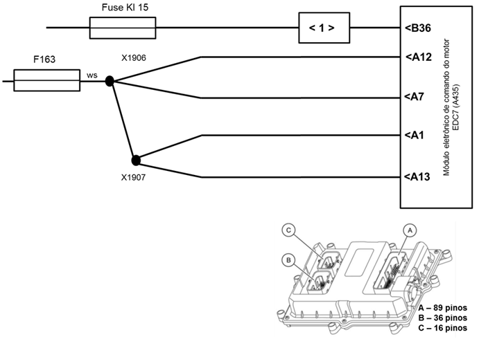

|

Descrição da Falha
Rotina de
desligamento do módulo EDC7 executada de maneira anormal.
Indicação de Falha
Luz de alerta acende constantemente com os símbolos  e e  e ativa o alarme sonoro longo, com o veículo parado.
e ativa o alarme sonoro longo, com o veículo parado.
A LIM permanece ligado.
Estratégia de Monitoramento
O módulo EDC7 registra uma falha se as
últimas duas rotinas de desligamento foram executadas de forma anormal.
Efeito da Falha
O
módulo registra as falhas com o veículo em funcionamento, porém não
consegue memorizar outras possíveis falhas ativas quando há falha na
rotina de desligamento.
Possíveis Falhas
As duas últimas rotinas de
desligamento não foram executados corretamente.
Aviso
  Quando a causa for uma falha de alimentação do módulo EDC7 também podem surgir as falhas 3082/01, 3087/04 e
3751/04. Se o veículo for desligado
muitas vezes através da chave geral da bateria está falha também se
apresentará. Quando a causa for uma falha de alimentação do módulo EDC7 também podem surgir as falhas 3082/01, 3087/04 e
3751/04. Se o veículo for desligado
muitas vezes através da chave geral da bateria está falha também se
apresentará.
Registros de Falhas em Outros
Módulos de Comando
Não.
Considerar os esquemas
elétricos do veículo
| Verificação
|
Medição |
Eliminação da
Falha |
| Tensão de alimentação do módulo EDC7 |
Utilize o Tester Box e consulte o manual Verificação EDC7 C32:
- Medir a tensão entre os pinos A01, A07,
A12 e A13 (+) e os pinos A03, A09, A14 und A15 (–)
Valor nominal:
20 - 28 V
|
– Verificar o sinal com
a MCO-08 na função "Monitoramento" quanto à plausibilidade
– Verificar os cabos
quanto a rompimento ou oxidação
– Verificar as
conexões quanto a mau contato ou pino torto
– Caso nenhuma falha
seja verificada, substituir o módulo EDC7
|
Tester Box

|